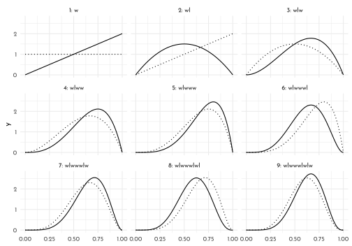
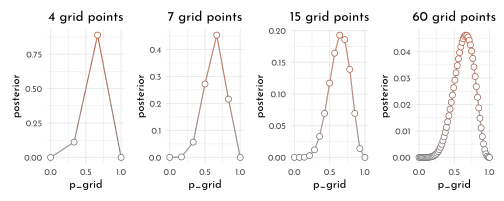
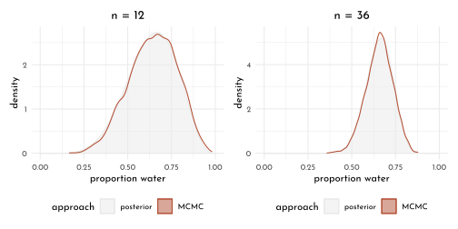
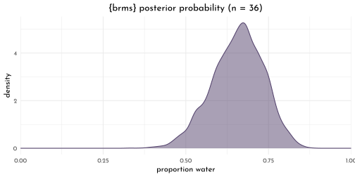

3 Rethinking: Chapter 2
Small Worlds and Large Worlds
by Richard McElreath, building on the Summary by Solomon Kurz
3.1 Counting possibilities
d <- tibble(p1 = 0,
p2 = rep(1:0, times = c(1, 3)),
p3 = rep(1:0, times = c(2, 2)),
p4 = rep(1:0, times = c(3, 1)),
p5 = 1)| p1 | p2 | p3 | p4 | p5 |
|---|---|---|---|---|
| 0 | 1 | 1 | 1 | 1 |
| 0 | 0 | 1 | 1 | 1 |
| 0 | 0 | 0 | 1 | 1 |
| 0 | 0 | 0 | 0 | 1 |
d %>%
mutate(turn = 1:4)%>%
pivot_longer(p1:p5,
names_to = "prob",
values_to = "realization") %>%
arrange(prob, turn) %>%
mutate(prob = factor(prob, levels = c("p5", "p4", "p3", "p2", "p1")),
marble = c("white", "dark")[realization + 1]) %>%
ggplot( aes( x = turn, y = prob ) ) +
geom_point(shape = 21, size = 4,
aes( fill = marble, color = after_scale(clr_darken(fill)))) +
geom_text(data = tibble(x = rep(c(.65, 4.45), each = 5),
y = rep(str_c("p",1:5), 2),
label = rep(c("[", "]"), each = 5), vjust = .7),
aes( x = x, y = y, label = label), family = fnt_sel, size = 6)+
scale_fill_manual(values = c(white = clr0, dark = clrd)) +
theme(legend.position = "bottom")
tibble(draws = 1:3,
marbles = 4) %>%
mutate(possibilities = marbles ^ draws) %>%
flextable::flextable()draws | marbles | possibilities |
1 | 4 | 4 |
2 | 4 | 16 |
3 | 4 | 64 |
layout_round <- function(round = 1, n = 4, angle = 360, start_angle = 0, p = .5, round_prefix = ""){
n_round <- n ^ round
tibble(idx_round = 1:n_round,
idx_round_sacaled = scales::rescale(idx_round,
from = c(.5, n_round+.5),
to = c(0, 1) * angle/360 + start_angle/360),
idx_draw = rep(1:n, n_round/n),
idx_parent = ((idx_round - 1 ) %/% n) + 1,
name_parent = str_c(round_prefix, round - 1, "_", idx_parent),
name = str_c(round_prefix, round, "_", idx_round),
x = sin(idx_round_sacaled * 2 * pi) * round,
y = cos(idx_round_sacaled * 2 * pi) * round) %>%
mutate(marble = c("white", "dark")[1 + ((idx_draw/n) <= p)],
round_prefix = round_prefix,
round = round)
}
links_round <- function(round = 1, n = 4, round_prefix = ""){
n_round <- n ^ round
n_prev <- n ^ (round - 1)
tibble(idx_round = 1:n_round,
idx_parent = ((idx_round - 1 ) %/% n) + 1,
from = str_c(round_prefix, round - 1, "_", idx_parent),
to = str_c(round_prefix,round, "_", idx_round),
round_prefix = round_prefix)
}
round_origin <- origin_round <- function(round_prefix = ""){
tibble(idx_round = 0,
idx_round_sacaled = 0,
idx_draw = 0,
name = str_c(round_prefix, "0_1"),
x = 0,
y = 0,
marble = NA)
}
marble_graph <- function(n_rounds = 3, n_draws = 4, angle = 360,start_angle = 0, p = .5, round_prefix = ""){
tbl_graph(nodes = 1:n_rounds %>% map_dfr(layout_round,
n = n_draws, angle = angle, start_angle = start_angle,
p = p, round_prefix = round_prefix) %>%
bind_rows(round_origin(round_prefix = round_prefix), .),
edges = 1:n_rounds %>% map_dfr(links_round, round_prefix = round_prefix)) %E>%
mutate(marble = .N()$marble[to],
to_name = .N()$name[to],
from_name = .N()$name[from])
}marble_graph(p = .25, n_rounds = 3, angle = 180, start_angle = -90) %>%
ggraph( layout = "manual",
x = . %N>% as_tibble() %>% .$x,
y = . %N>% as_tibble() %>% .$y) +
geom_node_point(aes(fill = marble, color = marble, size = -round), shape = 21) +
geom_edge_link(aes(color = marble),
start_cap = circle(2, 'mm'),
end_cap = circle(2, 'mm')) +
coord_equal() +
scale_color_manual(values = clr_darken(c(white = clr0, dark = clrd)),
na.value = "transparent", guide = "none") +
scale_fill_manual(values = c(white = clr0, dark = clrd), na.value = "transparent") +
scale_edge_color_manual(values = c(white = clr_darken(clr0, .2), dark = clrd), guide = "none") +
scale_size_continuous(range = c(1.5,3), guide = "none") +
guides(fill = guide_legend(override.aes = list(size = 4)), edge_alpha = "none") +
labs(title = "p = 0.25") +
theme(legend.position = "bottom")n_deviders <- 3
n_rounds <- 3
dividers <- tibble(x = rep(0,n_deviders),
y = x,
tau = seq(from = 0, to = 2*pi, length.out = n_deviders + 1)[2:(n_deviders+1)],
xend = sin(tau) * (n_rounds + .1),
yend = cos(tau) * (n_rounds + .1))
p_trials <- c(.25, .5, .75)
all_conjectures <- tibble(start_angle = c(0, 120, 240),
round_prefix = c("r1_" ,"r2_", "r3_"),
p = p_trials) %>%
pmap(marble_graph, angle = 120) %>%
reduce(bind_graphs)
na_to_false <- function(x){x[is.na(x)] <- FALSE; x}
na_to_true <- function(x){x[is.na(x)] <- TRUE; x}
tester <- function(x){x$name[x$r1_right]}
trial_sequence <- c("white", "dark")[c(2,1,2)]
selectors <- all_conjectures %N>%
mutate(r1_right = (round == 1 & marble == trial_sequence[1]) %>% na_to_true(),
r2_still_in = name_parent %in% name[r1_right],
r2_right = r2_still_in & (round == 2 & marble == trial_sequence[2]),
r3_still_in = name_parent %in% name[r2_right],
r3_right = r3_still_in & (round == 3 & marble == trial_sequence[3]),
on_path = r1_right | r2_right |r3_right) %>%
as_tibble() %>%
filter(on_path)
selector_results <- selectors %>%
filter(round == n_rounds) %>%
group_by(round_prefix) %>%
count() %>%
ungroup() %>%
mutate(tau = seq(from = 0, to = 2*pi,
length.out = n_rounds + 1)[2:(n_rounds+1)] - (2*pi)/(n_rounds * 2),
x = sin(tau) * (n_rounds + .5),
y = cos(tau) * (n_rounds + .5))
all_conjectures %>%
ggraph( layout = "manual",
x = . %N>% as_tibble() %>% .$x,
y = . %N>% as_tibble() %>% .$y) +
geom_node_point(aes(fill = marble, color = marble,
size = -round, alpha = name %in% selectors$name),
shape = 21) +
geom_edge_link(aes(color = marble, alpha = to_name %in% selectors$name),
start_cap = circle(2, 'mm'),
end_cap = circle(2, 'mm')) +
geom_segment(data = dividers, aes(x = x, y = y, xend = xend, yend = yend),
color = clr_darken("white",.10)) +
geom_text(data = selector_results, aes( x = x, y = y, label = n), family = fnt_sel, size = 6) +
coord_equal() +
scale_color_manual(values = clr_darken(c(white = clr0, dark = clrd)),
na.value = "transparent", guide = "none") +
scale_fill_manual(values = c(white = clr0, dark = clrd), na.value = "transparent") +
scale_edge_color_manual(values = c(white = clr_darken(clr0, .2), dark = clrd),
guide = "none") +
scale_size_continuous(range = c(1.5,3), guide = "none") +
scale_alpha_manual(values = c(`TRUE` = 1, `FALSE` = .2), guide = "none") +
guides(fill = guide_legend(override.aes = list(size = 4)), edge_alpha = "none") +
labs(caption = str_c(trial_sequence,collapse = "-")) +
theme(legend.position = "bottom")html_marbles <- c( glue("<span style='color:{clr0};filter:drop-shadow(0px 0px 1px black)'>\U2B24</span>"),
glue("<span style='color:{clr1l};filter:drop-shadow(0px 0px 1px black)'>\U2B24</span>"))
html_conjecture <- function(x){
str_c("[ ",str_c(html_marbles[c(x)+1], collapse = " ")," ]")
}
tibble(conjectures = list(rep(0,4),
rep(1:0, c(1,3)),
rep(1:0, c(2,2)),
rep(1:0, c(3,1)),
rep(1,4)),
conjecture = map_chr(conjectures, html_conjecture),
ways = map_dbl(conjectures, sum),
p = c(0, p_trials, 1),
`ways data/prior counts` = c(0, selector_results$n, 0),
`new count` = map2_chr( `ways data/prior counts`, ways, .f = function(x,y){glue("{x} $\\times$ {y} = {x * y}")}),
plausibility = (`ways data/prior counts` / sum(`ways data/prior counts`)) %>% round(digits = 2)
) %>%
rename(`ways to produce <span style='color:#85769EFF;filter:drop-shadow(0px 0px 1px black)'>⬤</span>` = "ways") %>%
dplyr::select(-conjectures) %>%
knitr::kable()| conjecture | ways to produce ⬤ | p | ways data/prior counts | new count | plausibility |
|---|---|---|---|---|---|
| [ ⬤ ⬤ ⬤ ⬤ ] | 0 | 0.00 | 0 | 0 \(\times\) 0 = 0 | 0.00 |
| [ ⬤ ⬤ ⬤ ⬤ ] | 1 | 0.25 | 3 | 3 \(\times\) 1 = 3 | 0.15 |
| [ ⬤ ⬤ ⬤ ⬤ ] | 2 | 0.50 | 8 | 8 \(\times\) 2 = 16 | 0.40 |
| [ ⬤ ⬤ ⬤ ⬤ ] | 3 | 0.75 | 9 | 9 \(\times\) 3 = 27 | 0.45 |
| [ ⬤ ⬤ ⬤ ⬤ ] | 4 | 1.00 | 0 | 0 \(\times\) 4 = 0 | 0.00 |
3.2 Building a Model
d <- tibble(toss = c("w", "l", "w", "w", "w", "l", "w", "l", "w"),
n_trials = 1:9,
sequence = n_trials %>% map_chr(.f = function(x, chr){str_c(chr[1:x], collapse = "")}, chr = toss),
n_success = cumsum(toss == "w"),
lag_n_trials = lag(n_trials, default = 0),
lag_n_success = lag(n_success, default = 0))
sequence_length <- 50
d %>%
expand(nesting(n_trials, toss, n_success),
p_water = seq(from = 0, to = 1, length.out = sequence_length)) %>%
group_by(p_water) %>%
# you can learn more about lagging here: https://www.rdocumentation.org/packages/stats/versions/3.5.1/topics/lag or here: https://dplyr.tidyverse.org/reference/lead-lag.html
mutate(lagged_n_trials = lag(n_trials, k = 1),
lagged_n_success = lag(n_success, k = 1)) #> # A tibble: 450 x 6
#> # Groups: p_water [50]
#> n_trials toss n_success p_water lagged_n_trials lagged_n_success
#> <int> <chr> <int> <dbl> <int> <int>
#> 1 1 w 1 0 NA NA
#> 2 1 w 1 0.0204 NA NA
#> 3 1 w 1 0.0408 NA NA
#> 4 1 w 1 0.0612 NA NA
#> 5 1 w 1 0.0816 NA NA
#> 6 1 w 1 0.102 NA NA
#> 7 1 w 1 0.122 NA NA
#> 8 1 w 1 0.143 NA NA
#> 9 1 w 1 0.163 NA NA
#> 10 1 w 1 0.184 NA NA
#> # … with 440 more rowsstat_binom <- function(n_trials, n_success, lag_n_trials, lag_n_success, sequence, ...){
if(n_trials == 1) {
g_lag <- stat_function(data = tibble(n_trials = n_trials, sequence = sequence),
fun = function(x){1}, xlim = c(0,1), linetype = 3)
} else {
g_lag <- stat_function(data = tibble(n_trials = n_trials, sequence = sequence),
fun = function(x){
f <- function(x){
dbinom(x = lag_n_success, size = lag_n_trials, prob = x)}
f(x)/ integrate(f = f,lower = 0, upper = 1)[[1]]},
xlim = c(0,1), n = 500, linetype = 3)
}
g_current <- stat_function(data = tibble(n_trials = n_trials, sequence = sequence),
fun = function(x){
f <- function(x){
dbinom(x = n_success, size = n_trials, prob = x)}
f(x)/ integrate(f = f,lower = 0,upper = 1)[[1]]},
xlim = c(0,1),n = 500)
list( g_lag, g_current)
}ggplot() +
(d %>% pmap(stat_binom) %>% unlist()) +
facet_wrap(str_c(n_trials,": ", sequence) ~ .)
3.3 Making the model go / Bayes’ Theorem
\[ Pr(\textit{p} | W, L) = \frac{Pr(W, L | \textit{p}) ~ Pr(\textit{p})}{Pr(W,L)}\\ Posterior = \frac{Probability~of~the~Data \times Prior}{ Average~probability~of~the~Data} \]
f_posterior_unscaled <- function(f_porior, f_like){ function(x){ f_porior(x) * f_like(x)} }
f_parts <- c("prior", "likelihood", "posterior")
gg_posterior <- function(f_porior, f_like, comp = 1){
list(
stat_function(data = tibble(part = factor("prior", levels = f_parts),
comp = comp),
fun = f_porior,
xlim = c(0,1), n = 500, geom = "area", color = clr2, fill = fll2),
stat_function(data = tibble(part = factor("likelihood", levels = f_parts),
comp = comp),
fun = f_like,
xlim = c(0,1), n = 500, geom = "area", color = clr2, fill = fll2),
stat_function(data = tibble(part = factor("posterior", levels = f_parts),
comp = comp),
fun = f_posterior_unscaled(f_porior = f_porior, f_like = f_like),
xlim = c(0,1), n = 500, geom = "area", color = clr2, fill = fll2)
)
}scale_fun <- function(f){
# marginal likelihood
function(x){f(x) / integrate(f = f, lower = 0, upper = 1)[[1]]}
}
f_like_in <- function(x){dbeta(x = x, shape1 = 8, shape2 = 5)}
f_uni <- function(x){1}
f_step <- function(x){if_else(x < .5, 0, 1)}
f_peak <- function(x){if_else(x < .5, (x * 2)^3, ((1 - x) * 2)^3)}ggplot() +
gg_posterior(f_porior = f_uni, f_like = f_like_in) +
gg_posterior(f_porior = f_step, f_like = f_like_in, comp = 2) +
gg_posterior(f_porior = f_peak, f_like = f_like_in, comp = 3) +
facet_wrap(comp ~ part, scales = "free_y")3.4 Motors: Grid Approximation
grid_approx <- function(n_grid = 20, W = 6, L = 3, prior = function(x){rep(1, length(x))}){
tibble(p_grid = seq(0, 1, length.out = n_grid),
prior = prior(p_grid),
likelihood = dbinom(W, size = W + L, prob = p_grid),
posterior_unstand = likelihood * prior,
posterior = posterior_unstand / sum(posterior_unstand))
}
plot_grid_approx <- function(data){
data %>%
ggplot(aes(x = p_grid, y = posterior, color = posterior)) +
ggforce::geom_link2() +
geom_point(shape = 21, fill = "white", size = 2.5) +
scale_color_gradientn(colours = c(clr_darken(clr0), clr2), guide = "none") +
labs(title = glue("{length(data$p_grid)} grid points"))
}c(4, 7, 15, 60) %>%
map(grid_approx) %>%
map(plot_grid_approx) %>%
wrap_plots(nrow = 1) &
scale_x_continuous(breaks = c(0, .5, 1))
Note how the y scale depends on the number of grid points: the peak reaches ~0.75 for 4 points, but only ~ 0.043 for 60 points.
3.5 Quadratic Approximation
library(rethinking)
map <- purrr::map
conpare_qa <- function(w_in, l_in){
globe_qa <- quap(
alist(
W ~ dbinom( W + L, p ), # binomial likelihood
p ~ dunif( 0, 1 ) # uniform prior
),
data = list( W = w_in, L = l_in )
)
qa_results <- precis(globe_qa) %>%
as_tibble() %>%
mutate(qa = glue("W: {w_in}, L: {l_in}"))
qa_results %>% knitr::kable() %>% print()
ggplot() +
stat_function(fun = function(x){ dbeta( shape1 = w_in + 1, shape2 = l_in + 1, x = x ) /
integrate(f = function(x){ dbeta( shape1 = w_in + 1, shape2 = l_in + 1, x = x )},
lower = 0, upper = 1)[[1]] },
xlim = c(0,1), n = 500, geom = "area", color = clr0d, fill = fll0)+
stat_function(fun = function(x){ dnorm(x = x, mean = qa_results$mean, sd = qa_results$sd )},
xlim = c(0,1), n = 500, geom = "line", color = clr2, linetype = 3) +
labs(title = glue("W: {w_in}, L: {l_in}, n = {w_in + l_in}"),
y = "density", x = "proportion water")
}conpare_qa(w_in = 6, l_in = 3) +
conpare_qa(w_in = 12, l_in = 6) +
conpare_qa(w_in = 24, l_in = 12)#>
#>
#> | mean| sd| 5.5%| 94.5%|qa |
#> |---------:|---------:|---------:|---------:|:----------|
#> | 0.6666665| 0.1571338| 0.4155363| 0.9177967|W: 6, L: 3 |
#>
#>
#> | mean| sd| 5.5%| 94.5%|qa |
#> |---------:|---------:|---------:|---------:|:-----------|
#> | 0.6666648| 0.1111107| 0.4890884| 0.8442411|W: 12, L: 6 |
#>
#>
#> | mean| sd| 5.5%| 94.5%|qa |
#> |--------:|---------:|--------:|--------:|:------------|
#> | 0.666667| 0.0785669| 0.541102| 0.792232|W: 24, L: 12 |3.6 Marcov Chain Monte Carlo (MCMC)
n_samples <- 1e4
p_init <- rep( NA, n_samples )
p_init[1] <- .5
manual_mcmc <- function(p, W = 6, L = 3){
for ( i in 2:n_samples ) {
p_new <- rnorm( n = 1, mean = p[ i - 1], sd = 0.1)
if ( p_new < 0 ){ p_new <- abs( p_new ) }
if ( p_new > 1 ){ p_new <- 2 - p_new }
q0 <- dbinom( W, W + L, p[ i - 1 ] )
q1 <- dbinom( W, W + L, p_new )
p[i] <- if_else( runif(1) < q1 / q0, p_new, p[i - 1] )
}
p
}
p <- manual_mcmc(p_init)
p_36 <- manual_mcmc(p_init, W = 24, L = 12)
p_p <- tibble(x = p) %>%
ggplot() +
stat_function(fun = function(x){ dbeta( shape1 = 6 + 1, shape2 = 3 + 1, x = x ) /
integrate(f = function(x){ dbeta( shape1 = 6 + 1, shape2 = 3 + 1, x = x )},
lower = 0, upper = 1)[[1]] },
xlim = c(0,1), n = 500, geom = "area",
aes(color = "posterior", fill = after_scale(clr_alpha(color))))+
geom_density(aes(x = x, color = "MCMC")) +
scale_color_manual("approach", values = c(posterior = clr0, MCMC = clr2)) +
labs(y = "density", x = "proportion water", title = "n = 12") +
theme(legend.position = "bottom")
p_p36 <- tibble(x = p_36) %>%
ggplot() +
stat_function(fun = function(x){ dbeta( shape1 = 24 + 1, shape2 = 12 + 1, x = x ) /
integrate(f = function(x){ dbeta( shape1 = 24 + 1, shape2 = 12 + 1, x = x )},
lower = 0, upper = 1)[[1]] },
xlim = c(0,1), n = 500, geom = "area",
aes(color = "posterior", fill = after_scale(clr_alpha(color))))+
geom_density(aes(x = x, color = "MCMC")) +
scale_color_manual("approach", values = c(posterior = clr0, MCMC = clr2)) +
labs(y = "density", x = "proportion water", title = "n = 36") +
theme(legend.position = "bottom")
p_p + p_p36
3.7 Homework
M1
plot_grid_approx <- function(data){
data %>%
ggplot(aes(x = p_grid, y = posterior, color = posterior)) +
ggforce::geom_link2() +
geom_point(shape = 21, fill = "white", size = 2.5) +
scale_color_gradientn(colours = c(clr_darken(clr0), clr2), guide = "none") +
labs(title = glue("{length(data$p_grid)} grid points"))
}tibble(n_grid = rep(c(4,7,20), 3),
L = rep(c(0,1,2), each = 3),
W = rep(c(3,3,5), each = 3)) %>%
pmap(grid_approx) %>%
map(plot_grid_approx) %>%
wrap_plots(nrow = 3) &
scale_x_continuous(breaks = c(0, .5, 1))
M2
tibble(n_grid = rep(c(4,7,20), 3),
L = rep(c(0,1,2), each = 3),
W = rep(c(3,3,5), each = 3)) %>%
pmap(grid_approx, prior = f_step ) %>%
map(plot_grid_approx) %>%
wrap_plots(nrow = 3) &
scale_x_continuous(breaks = c(0, .5, 1))
M3
\[ Pr(Earth | Land) = \frac{Pr(Land | Earth) \times Pr(Earth)}{Pr(Land)} \]
p_l_on_earth <- .3
p_l_on_mars <- 1
p_earth <- .5
average_p_l <- .5 * (p_l_on_earth + p_l_on_mars)
(p_earth_on_l <- p_l_on_earth * p_earth / average_p_l)#> [1] 0.2307692M4 & M5
cards <- c("C1b1|C1b2", "C2b1|C2w2", "C3w1|C3w2" )
conjectures <- c("C1b1|C1b2", "C1b2|C1b1",
"C2b1|C2w2", "C2w2|C2b1",
"C3w1|C3w2", "C3w2|C3w1")
tibble(cards = c("C1", "C2", "C3"),
ways = c("C1b1|C1b2 & C1b2|C1b1", "C2b1|C2w2", ""),
ways_tor_produce_data = c(2, 1, 0),
plausibility = (ways_tor_produce_data / sum(ways_tor_produce_data)) %>% round(digits = 3),
other_side = c("b", "w", ""),
prior = c(2,1,1),
posterior = ((plausibility * prior) / sum(plausibility * prior)) %>% round(digits = 3))%>%
knitr::kable()| cards | ways | ways_tor_produce_data | plausibility | other_side | prior | posterior |
|---|---|---|---|---|---|---|
| C1 | C1b1|C1b2 & C1b2|C1b1 | 2 | 0.667 | b | 2 | 0.8 |
| C2 | C2b1|C2w2 | 1 | 0.333 | w | 1 | 0.2 |
| C3 | 0 | 0.000 | 1 | 0.0 |
M6
tibble(cards = c("C1", "C2", "C3"),
ways = c("C1b1|C1b2 & C1b2|C1b1", "C2b1|C2w2", ""),
ways_tor_produce_data = c(2, 1, 0),
plausibility = (ways_tor_produce_data / sum(ways_tor_produce_data)) %>% round(digits = 3),
other_side = c("b", "w", ""),
prior = c(1,2,3),
posterior = ((plausibility * prior) / sum(plausibility * prior)) %>% round(digits = 3))%>%
knitr::kable()| cards | ways | ways_tor_produce_data | plausibility | other_side | prior | posterior |
|---|---|---|---|---|---|---|
| C1 | C1b1|C1b2 & C1b2|C1b1 | 2 | 0.667 | b | 1 | 0.5 |
| C2 | C2b1|C2w2 | 1 | 0.333 | w | 2 | 0.5 |
| C3 | 0 | 0.000 | 3 | 0.0 |
M7
tibble(cards = c("C1", "C2", "C3"),
ways = c("C1b1>C2w2 & C1b1>C3w1 & C1b1>C3w2 & C2b1>C2w2 & C2b1>C3w1 & C2b1>C3w2",
"C2b1>C3w1 & C2b1>C3w2", ""),
ways_tor_produce_data = c(6, 2, 0),
plausibility = (ways_tor_produce_data / sum(ways_tor_produce_data)) %>% round(digits = 3))%>%
knitr::kable()| cards | ways | ways_tor_produce_data | plausibility |
|---|---|---|---|
| C1 | C1b1>C2w2 & C1b1>C3w1 & C1b1>C3w2 & C2b1>C2w2 & C2b1>C3w1 & C2b1>C3w2 | 6 | 0.75 |
| C2 | C2b1>C3w1 & C2b1>C3w2 | 2 | 0.25 |
| C3 | 0 | 0.00 |
H1
\[ Pr(twin | spec_a) = 0.2 \\ Pr(twin | spec_b) = 0.1 \\ Pr(twin) = 0.15 \]
\[ Pr(spec_a | twin) = \frac{Pr(spec_a) \times Pr(twin | spec_a)}{Pr(twin)} \\ Pr(spec_b | twin) = \frac{Pr(spec_b) \times Pr(twin | spec_b)}{Pr(twin)} \]
pr_twn_on_a <- .1
pr_twn_on_b <- .2
pr_twn <- (pr_twn_on_a + pr_twn_on_b) /2
prior_a <- .5
pr_a_on_twn <- (prior_a * pr_twn_on_a) / pr_twn
pr_b_on_twn <- ((1 - prior_a) * pr_twn_on_b) / pr_twn
(p_next_twn <- pr_a_on_twn * pr_twn_on_a + pr_b_on_twn * pr_twn_on_b) %>%
round(digits = 3)#> [1] 0.167H2
\[ Pr(spec_a | twin) = \frac{1}{3} \]
pr_a_on_twn#> [1] 0.3333333H3
\[ Pr(single | spec_a) = Pr(\neg twin | spec_a) = 1 - Pr(twin | spec_a) \]
\[ Pr( spec_a | single) = \frac{Pr(single|spec_a)Pr(spec_a)}{Pr(single)} \]
pr_sgl_on_a <- 1 - pr_twn_on_a
pr_sgl_on_b <- 1 - pr_twn_on_b
pr_sgl <- weighted.mean(x = c(pr_sgl_on_a, pr_sgl_on_b),
w = c(pr_a_on_twn, 1- pr_a_on_twn))
prior_a <- pr_a_on_twn
pr_a_on_sgl <- (prior_a * pr_sgl_on_a) / pr_sgl
pr_b_on_sgl <- ((1 - prior_a) * pr_sgl_on_b) / pr_sgl
tibble(pr_a_on_sgl = pr_a_on_sgl, pr_b_on_sgl = pr_b_on_sgl,
control = pr_a_on_sgl + pr_b_on_sgl) %>%
round(digits = 4) %>%
knitr::kable()| pr_a_on_sgl | pr_b_on_sgl | control |
|---|---|---|
| 0.36 | 0.64 | 1 |
H4
\[ Pr(spec_a | test ) = 0.8 \\ Pr(spec_b | test ) = 0.65 \\ Pr(spec_a | test ) = \frac{Pr( test | spec_a ) \times Pr(spec_a)}{Pr(test_positive)} \]
pr_testa_on_a <- .8
pr_testb_on_b <- .65
pr_testa_on_b <- 1 - pr_testb_on_b
prior_a <- .5
pr_testa <- (prior_a * pr_testa_on_a) + ((1- prior_a) * pr_testa_on_b)
tibble(pr_on_testa = c("A","B"),
genetic_test = c((prior_a * pr_testa_on_a) / pr_testa,
((1 - prior_a) * pr_testa_on_b) / pr_testa))#> # A tibble: 2 x 2
#> pr_on_testa genetic_test
#> <chr> <dbl>
#> 1 A 0.696
#> 2 B 0.304prior_a_updated <- pr_a_on_sgl
pr_testa_updated <- (prior_a_updated * pr_testa_on_a) + ((1- prior_a_updated) * pr_testa_on_b)
tibble(pr_on_testa = c("A","B"),
genetic_test = c((prior_a_updated * pr_testa_on_a) / pr_testa_updated,
((1 - prior_a_updated) * pr_testa_on_b) / pr_testa_updated))#> # A tibble: 2 x 2
#> pr_on_testa genetic_test
#> <chr> <dbl>
#> 1 A 0.562
#> 2 B 0.4383.8 {brms} section
brms_c2_36_tosses <- brm( data = list(w = 24),
family = binomial(link = "identity"),
w | trials(36) ~ 0 + Intercept,
prior(beta(1, 1), class = b, lb = 0, ub = 1),
seed = 42,
file = "brms/brms_c2_36_tosses" )
brms_c2_36_tosses %>% summary()#> Family: binomial
#> Links: mu = identity
#> Formula: w | trials(36) ~ 0 + Intercept
#> Data: list(w = 24) (Number of observations: 1)
#> Draws: 4 chains, each with iter = 2000; warmup = 1000; thin = 1;
#> total post-warmup draws = 4000
#>
#> Population-Level Effects:
#> Estimate Est.Error l-95% CI u-95% CI Rhat Bulk_ESS Tail_ESS
#> Intercept 0.66 0.08 0.49 0.80 1.00 1123 1813
#>
#> Draws were sampled using sampling(NUTS). For each parameter, Bulk_ESS
#> and Tail_ESS are effective sample size measures, and Rhat is the potential
#> scale reduction factor on split chains (at convergence, Rhat = 1).posterior_summary(brms_c2_36_tosses) %>%
round(digits = 3) %>%
knitr::kable()| Estimate | Est.Error | Q2.5 | Q97.5 | |
|---|---|---|---|---|
| b_Intercept | 0.657 | 0.078 | 0.492 | 0.798 |
| lp__ | -3.994 | 0.744 | -6.055 | -3.465 |
as_draws_df(brms_c2_36_tosses) %>%
as_tibble() %>%
ggplot(aes(x = b_Intercept)) +
geom_density(color = clr1, fill = fll1) +
scale_x_continuous(limits = c(0, 1), expand = c(0, 0)) +
labs(y = "density", x = "proportion water",
title = "{brms} posterior probability (n = 36")